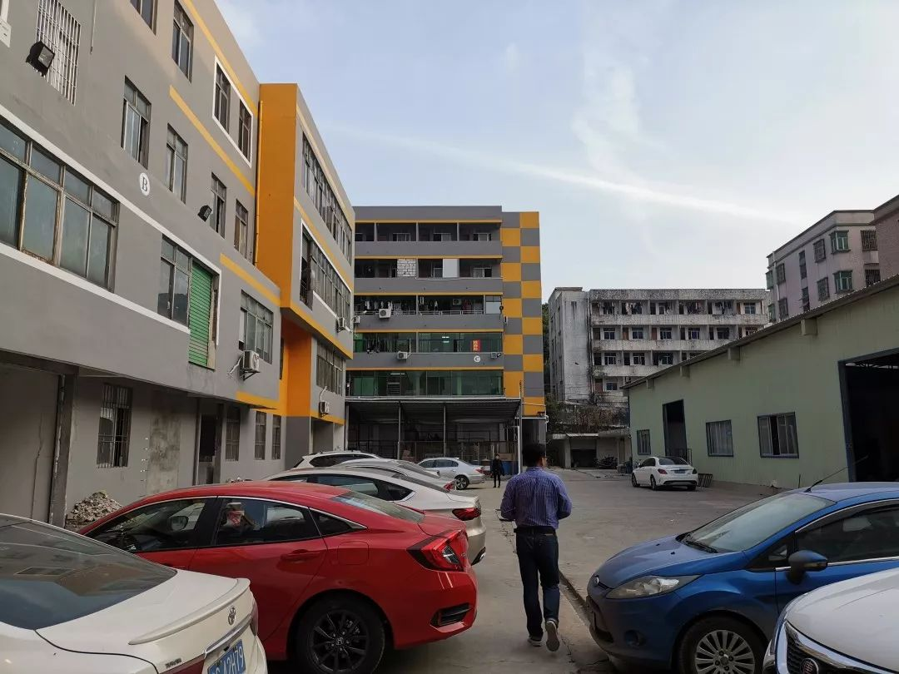

开工了，可我没口罩
原文链接 备份链接 以下文章来源于AI财经社 ，作者AI财经社作者 开工前最忧伤的段子可能是，“今天戴着口罩去买口罩，口罩没买到，还损失了一个口罩。” 2月10日起，部分企业陆续复工，宅在家里即为国家做贡献的使命宣告终结。当下的主要矛 …
以下文章来源于我是南七道 ，作者南七道

疫情，让老蔡这样的小微型企业措手不及。而开工之路，更是遥不可及
*******文｜ 南七道*******

广东随处可见的小工厂（南七道2019年摄）
受疫情影响，最近包括魅KTV吴海、西贝贾国龙、老乡鸡董事长束从轩，都纷纷站出来说经营困难，活不过2-3个月，但实际上，他们的规模并不小，比他们更困难的是小微企业主。他们账上没有千万资金，他们没有微博微信公号，他们也不会发声公关，他们唯一能做的就是等待。
老蔡在深圳宝安开了一个工厂，是专门做线材加工，主要用于音响连接线，充电线，耳机连接线等，是个很小的工厂，3-40个员工，一年产值不到一千万。这样的企业在深圳东莞遍地皆是。
疫情，让老蔡这样的小微型企业措手不及。而开工之路，更是遥不可及。
报备：

复工部分申请资料
以目前的形势，防疫成了各级政府的头等大事。疫情之下的复工报备和审核，已经成了一个体力兼脑力的活。
首先是派人去上培训课，“如何开工及准备”。然后要对工厂环境进行消毒和监测。再就递交文书和申请资料：
在深圳宝安，一家工厂要申请开工，首先是面对着海量的表格和文件，包括：
1 复工申请备案表
2 复工企业疫情防控承诺书
3 公司防控小组
4 员工体温检查记录
5 防护用品发放登记表
6 防护用品库存清单
7·1 人员流动信息表
7·2 流动人员清单
8 全厂检查表
9 全厂逐级责任书签订
10 企业应对疫情预案
11 全员复工培训档案
12 安全专题班前会
13 隔离室
在南山西丽，有的公司接到了街道办复工要求，需要公司为每位员工每天准备一套防护服的，最后发现，不仅企业买不到，连医院都没有了，于是不了了之。甚至还出现了很魔幻的情况：企业要复工，就要提交资料申请，盖公章。但公章在办公室，办公室被封锁了。于是资料没办法提交。但你不提交资料，就没法进入办公室。
“我们没有申请复工，申请也不会通过的。”老蔡的工厂也在深圳宝安，但他知道看了身边的朋友都是白忙一场。首先是审批手续之复杂，审批通过率之低，让很多工厂都放弃了申报。在深圳宝安的一个工厂的行政说，他们已经递交了两次，但都没通过。在深圳南山知名的粤海街道办，有40000多家企业，包括腾讯迅雷等多家上市公司在内，但一天通过只有100家左右。
工人：
即使好不容易，通过了审核，但是工人是个大问题，工厂面临无人生产的窘境。
同样还是政策到了基层，被层层加码和扭曲变形的现状。尽管公安部，发改委多部门有明文规定，不得随意封锁高速公路、县道、乡道。但实际情况就是，现在各个省市县乡，已经被人为的用渣土、围墙、栏杆封锁成了一个个孤岛。人进不去，也出不来。
老蔡的工人来自于湖北湖南江西四川等地，疫情重地湖北姑且不说。湖南慈利等非重点疫情的区域，这些工人想出门务工，最后才发现连乡村都出不去，通往县城的道路已经被彻底切断。这种情况在四川等多地都有发生。老工人出不来，也没有办法补充新工人。
即使部分工人已经回到深圳，也不敢开工。老蔡所在的工业园规定，首先是工人要隔离14天。然后审批后上岗，如果工作期间，发现有一个工人发热，不管是否确诊，那么这个工厂就要停工，所有人隔离14天。如果隔离期间，上下游供应商开工了，而他们还没有解除隔离，那么很有可能，合作方就会更换供应商，因为合作方等不起。
如果是这样，那干脆不开工，继续等待。
供应链：
现在的制造业生产，已经完全是一个供应链、产业链深度合作的生态融合的关系，再小的一个商品，也不可能独立完成了。按照制造业的习惯，考虑到春节假期，一般会在年前，准备15天的生产原料，最多一个月吧，太多仓储就会有太大压力。环环相扣，其中一家开工根本没用，而是需要整个供应链上的多个合作方，大家一起动起来。
老蔡的工厂生产的一根看起来很普通的音响的连接线，包括核心部分的光纤，PVC塑材、金属线、端子开模、胶带、外包装。每一个部分都需要一个供应商和小型加工厂。至少需要6家供应商参与，而老蔡自己又只是LG等大品牌的外包产业链中极小的一个环节。即使强大如iPhone，如果是其中一家螺丝钉供应商不开张，那么一部苹果手机其他屏幕等组件都到位了也没用，没法完成最后组装，进入到商品流通环节。
现代的商业合作，让彼此合作越来越紧密，同时对他人的依赖程度也越来越深。而制造业的商品数量，直接影响了电商和外贸业务。中国一咳嗽，世界就感冒，一点也不夸张。做外贸的Ella，主要做欧洲的亚马逊，家庭类的电子产品，但是现在的货，只到2月中旬，现在下单，工厂也无法补货了。只能等待，而这个过程中，她苦心经营的网店的排名和热度都会下降，又会影响到下一阶段的营收。
三角债：
小微制造企业现在的困境，表面上是受疫情影响，但背后深层次的问题，其实是三角债。三角债是中国制造业的最大顽疾，问题由来已久，深入到产业链每一个环节。这种由台湾人带来的商业模式，已经让国内制造厂商苦不堪言，但无力改变。相互欠款已经变成了一种行业通用规则。在欧美发达国家，一般是现款结算，同时会有法律约束和规定。除了芯片等技术门槛很高的产业，必须付现外。越是门槛低的产业，欠账越严重，恶性循环。
大的生产商找中型工厂代工生产，中型企业拿到订单，先找原材料商赊账，然后再分包给小企业，小企业再分包给微型工厂和家庭作坊，大的生产商收到货再发给销售商和电商平台，一环扣一环。一般收到货之后2-6个月付款。于是形成了人人是债主，人人都欠债的尴尬局面。
很多低端制造企业数量众多，有的时候互相之间为了抢生意，会拼命压价，甚至不惜亏本抢客。这暴露了中国产业结构的问题。当企业面临低利润时，就会挤占流动资金和应付货款，进一步加剧了相互拖欠。而企业产品没有核心技术门槛，导致产品积压，形成采购——生产（含外包）——压价——拖欠——破产。如果其中有一家倒闭，那么它欠别的合作方的债务也无法兑现，于是引发连环破产。生态链上的一系列恶性循环。
中国的工厂的账期，一般是3-6个月。如果是华为这样的大公司下订单，账期60天，你先替华为生产，采购原料和发工资，交货之后，60天再回款，在这之前，所有的资金有企业垫付。华为这样有实力的公司，相对风险较小，但如果是其他公司，风险就很大了。2015年年底，锤子手机代工厂，有4000员工的深圳中天信电子，因为三角债，老板跑路，引发一系列的合作厂商倒闭。
老蔡利润很薄，一年流水千万级别，但除去房租、水电、工资、其他行政开支外，也就是每个月剩个几万块钱利润，即使这个利润也是应收款。年前房租工资奖金，备货，支付部分货款，其实账面现金已经所剩无几，就等着新年来了之后的结算和流水。“餐饮和KTV都是现金流，我们极少能收到现款。大多数工厂的账面现金，如果完全不开工，只够支撑一个月，最多两月。”
本文获权转载自“我是南七道”


责编 | 黄端 duanhuang@caijing.com.cn

原文链接 备份链接 以下文章来源于AI财经社 ，作者AI财经社作者 开工前最忧伤的段子可能是，“今天戴着口罩去买口罩，口罩没买到，还损失了一个口罩。” 2月10日起，部分企业陆续复工，宅在家里即为国家做贡献的使命宣告终结。当下的主要矛 …
原文链接 备份链接 一些防疫措施影响到部分零部件加工生产，部分跨国公司订单中断。供应链较长且分工复杂的汽车和电子制造行业，压力更加明显。但此次疫情并不会对供应链产生可以衡量的长期影响。中国花30年打造的供应链， …
原文链接 备份链接 一场疫情的突袭，让城市停摆。 街上熙熙攘攘不复存在，过年热闹喜庆的氛围荡然无存，原本早就应该隆隆作响的工厂，不知所措地安静着…… 2月19日下午，浙江省举行新冠肺炎疫情防控工作新闻发布会，会上通报了疫情最新情况，在“五 …
原文链接 备份链接 _ 全国除湖北以外地区的确诊病例数增速连日放缓，让部分制造企业看到了希望，基于疫情防控的逐步进展，安全复工自救计划也开始酝酿 _ 文 |《财经》记者 张威 编辑 | 袁满 12个园区、1500家企业、近10万员工，总 …
原文链接 备份链接 各级政府的绩效考评正在从“增长锦标赛”逐渐转为侧重治理能力、治理体系的新绩效评估框架，这次疫情可能是转折点。如何提升市场应对突发事件的能力和韧性，也是体现国家综合治理能力提升的重要标志 2020年2月12日，位于武汉体 …